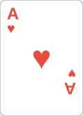
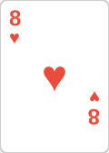
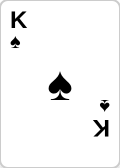
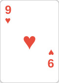
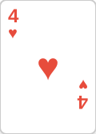
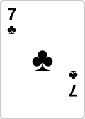

실제 상황에서 어떻게 적용할까?






나를 이기게 할 카드의 개수
Rule of 4 and 2
플랍 → 리버: 아웃츠 × 4
턴 → 리버: 아웃츠 × 2
예: 플러시 드로우 = 9 아웃츠
→ 9 × 4 = 36% 승률
이 콜이 장기적으로 돈을 벌까?
감정이 아닌 수학으로 결정하라
착취 불가능한 완벽한 균형
두 가지 접근 방식
특징:
✓ 착취 불가능
✓ 안정적
✓ 상대 무관
수익:
+2 BB/100
(꾸준하지만 보통)
상대 약점별 대응:
• 자주 폴드 → 블러프 ↑
• 자주 콜 → 밸류벳 ↑
• 패시브 → 공격 ↑
수익:
+5 BB/100
(높지만 상대 의존적)
프로는 상황에 따라 전환한다
언제 무엇을 써야 할까?
📸 멀티테이블링 스크린샷
(4-8개 테이블 동시 플레이 화면)
분산(Variance) 대비 충분한 자금 확보
📊 좋은 플레이어도 단기 하락 가능
캐시 게임
20-30×
바이인 금액
토너먼트
50-100×
바이인 금액
충분한 자금 = 장기전 가능
운이 나쁜 시기를 버틸 수 있어야 합니다
모든 핸드 기록 및 분석
VPIP, PFR, 3-bet% 등
+EV 행동 확인
매일 플레이 복기
솔버로 최적해 비교
실수 패턴 개선
프로는 도박꾼이 아니라 전문가
카드 이상의 것을 본다
현재 팟 오즈가 안 맞아도
미래 가치까지 계산
현재 팟 오즈: 15% (부족)
하지만 히트하면 상대 스택 전체를 가져올 수 있음
→ Implied Odds로 콜
토너먼트에서 칩 가치 ≠ 돈 가치
파이널 테이블, 4명 남음
1등: $10,000 / 2등: $6,000 / 3등: $3,000 / 4등: $0
→ AA를 폴드하는 상황도 존재
상대의 한 장 카드가 아닌 가능한 모든 핸드의 분포
상대가 UTG에서 레이즈 했다면?
→ 하이라이트된 핸드들 중 하나
→ 각 핸드의 확률을 계산
→ 내 핸드 vs 범위 전체의 승률
🎯 핵심
특정 카드와 싸우는 게 아니라
범위 전체와 싸운다
포지션, 스택 크기, 상대의 성향에 따라
범위는 계속 달라집니다
카지노/사이트 수수료
팟의 약 3-5%
→ 이것도 계산에 포함
모든 변수 통합 계산
Implied Odds + ICM + Range + Rake
→ 정답이 존재하는 게임
핵심: +V(결과)가 아닌
+EV(과정)를 추구